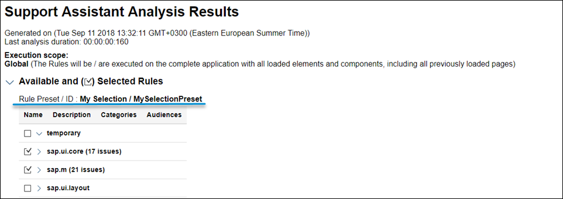

What's New in SAPUI5 1.60
What's New in SAPUI5 1.60
Hyphenation for Text Controls
SAPUI5 now allows
you to hyphenate words in multiline texts when controls are in wrapping mode.
You can enable hyphenation through the wrappingType property
for the sap.m.Text, sap.m.Title, and
sap.m.Label text controls, or you can use the API of the
sap.ui.core.hyphenation.Hyphenation class directly.

The hyphenation feature uses third-party and browser-native tools. We are not responsible for any inconsistencies or incorrect grammar. Also, the variety of supported languages is outside the scope of our control and may be subject to future changes.
For more
information, see Hyphenation for Text Controls, the
Sample, and the API
Reference for sap.m.Text,
sap.m.Title,
sap.m.Label, and
sap.ui.core.hyphenation.Hyphenation.
Support Assistant
System Presets
In addition to the custom rule presets that users can create, we've introduced system-defined presets. They constitute a selection of rules related within the context of a certain scenario, functional area, or other aspects of the application UI that can be checked using support rules. System presets are part of the Support Assistant code and appear by default for all users. They cannot be deleted but can be modified and exported as regular presets.
The first system preset we've introduced is for accessibility-related rules.

For more information, see Rules Management.
Rule Presets in the Analysis Report
The Analysis Report now includes information about the rule preset used during
the analysis. This information is also available in the downloadable HTML report
and in all JSON formats that the API supports, through
jQuery.sap.support.getAnalysisHistory() and
jQuery.sap.support.getFormattedAnalysisHistory().
We have also improved the design of the report itself.
For more information, see Analysis Report.
Support Assistant API
The jQuery.sap.support.analyze method of the Support Assistant
API can now accept a rule preset and use it to run an analysis as an alternative
to manually listed rule selection. For more information, see Support Assistant API.
UI5 Evolution
Modular Core
Existing modules in the modulare core have been reworked to follow the AMD-like (asynchronous module definition) syntax of SAPUI5, which ensures that modules and their dependencies can be loaded and evaluated asynchronously. The Asynchronous Module Definition (AMD) specifies a mechanism for defining modules so that the module and its dependencies can be loaded asynchronously. It allows you to avoid accessing modules via global variables and enforces a strict dependency declaration. The documentation has been enhanced accordingly and also made more prominent. For more information, see Modules and Dependencies.
The core part of the framework has improved its modular structure by leveraging SAPUI5's AMD-like
features such as sap.ui.define and sap.ui.require. Already starting with 1.58, the
former jQuery.sap modules were replaced by new, more granular
modules. The new modules are separated either into a regular browser-dependent
"UI" layer or into a "base" layer that is independent from the browser-native
API and the DOM. For
more information, see Adapting to the Modularization of the Core.
Several mechanisms have been introduced to allow existing applications to continue to run without changes. Nevertheless, all SAPUI5 projects should start to migrate their code and leverage the new core modules to get rid of the deprecated modules and benefit from current or upcoming improvements, especially towards the AMD-like syntax of SAPUI5.
A comprehensive overview shows how you can replace legacy jQuery.sap modules
and jQuery extensions with new modules or native browser APIs.
For
more information, see Legacy jQuery.sap Replacement. The Support Assistant also comes with new rules to help identify
legacy code, and best practices for module definition and asynchronous loading
are also provided. For
more information, see Best Practices for Loading Modules.
Asynchronous API
In order to benefit from asynchronous behavior and to avoid synchronous requests (as browsers
start to deprecate sync XHR), future-proof SAPUI5 code should
use asynchronous APIs. One important step to get there with your existing code
is to replace synchronous factory functions, such as global functions in the
sap.ui namespace, with asynchronous alternatives. Many
asynchronous factories are now available via a consistent and elegant API. The
documentation provides examples of former sync factories and their preferred
async alternatives. For
more information, see Legacy Factories Replacement.
-
sap.f.GridList: A list-based control with grid layout capabilities. It is based on thesap.m.ListBasecontrol, and it adds flexibility to configure different grid layouts. The layout used is based on the CSS display grid, and the control has a default configuration.
For more information, see Grid Controls, the API Reference, and the Samples.
-
sap.ui.layout.cssgrid.CSSGrid: A layout control, used to create full-page layouts or user interface elements. It is a two-dimensional layout based on the browser-native CSS display grid that handles both columns and rows. The control can be used together withsap.m.FlexBoxwhich is the one-dimensional alternative for layouting.
For more information, see Grid Controls, the API Reference, and the Samples.
-
sap.ui.unified.ColorPickerPopover: A wrapper around thesap.ui.unified.ColorPickercontrol that allows it to be displayed as a popover or a dialog depending on the device. TheColorPickerPopoverhas the same properties as theColorPickercontrol but it has two additional methods -openByandcloseto control the popover. Another difference between the new control and theColorPickercontrol is that there is noliveChangeevent, and thechangeevent is fired only when the Submit button is pressed. For more information, see the API Reference and the Sample.
-
sap.f.FlexibleColumnLayout: A new sample now shows the control as an app with routing that displays different pages in the initial column. The first page is only displayed inOneColumnlayout type. For more information, see the Sample. -
sap.gantt: You can connect shapes in the Gantt chart. This can be used to represent the relationship between two activities.For more information, see the API Reference.To connect two shapes, the
connectableproperty of the shapes must be set totrue. -
sap.m.Image: То optimize app performance, we changed the default value of thedensityAwareproperty tofalse. App developers should enable this property only if the app provides the corresponding image versions for high-density devices. For more information, see the API Reference. -
sap.m.MessageView/sap.m.MessagePopover: A keyboard accelerator for the Alt Enter event has been added. Now, when the focus is on item with theactiveTitleproperty set totrue, and when the Alt Enter is triggered, theactiveTitlePresscallback is fired. Screen reader support was also improved. Information that the defined keyboard accelerators can be used for easier navigation has been provided to its users. -
sap.m.MultiComboBox:-
We have implemented a dropdown list with a two-column layout. You can now use the
MultiComboBoxwith a two-column layout to display additional information for your options. To enable this feature, you need to set theshowSecondaryValuesproperty totrue. This feature was initially available only for theComboBoxand has now been enabled for theMultiComboBoxas well. This property indicates whether the text values of theadditionalTextproperty of asap.ui.core.ListItemare shown. For more information, see the Sample. -
We have introduced grouping in the suggestion list of
sap.m.MultiComboBox. This feature allows you to easily group items by common characteristics and to display a header describing the characteristics for each group. If data binding is used, grouping is defined on theSorterin data binding. Alternatively, a group header could be added programmatically, as an instance ofsap.ui.core.SeparatorItemwithkeyand/ortextproperties, by adding it to theitemsaggregation of thesap.m.MultiComboBoxcontrol. For more information, see the Sample.
-
-
sap.m.Page: We have madesap.m.Pagea droppable area. -
sap.m.PlanningCalendar: ThestickyHeaderproperty is no longer experimental. For more information, see the API Reference. -
sap.m.SearchField: The live search function of the control was originally designed to trigger a backend call after each keystroke to retrieve partially-matching suggestions. Now, we have introduced a default delay of 400 ms before sending the searched data to the backend, to ensure better performance and optimal user experience. For more information, see the Sample. -
sap.m.table:-
The
contextualWidthproperty is now available in the responsive table which allows you to control the popin behavior based on the size of a container rather than a whole page. For more information, see the API Reference for thecontextualWidthproperty and theContextualWidthDynamicSample as well as theContextualWidthStaticSample. - The
pasteevent has been added to the responsive table. For more information, see the API Reference and the Sample.
-
-
sap.m.UploadCollection: The control's functionality has been unified, so the behavior is now more consistent, regardless of whether theinstantUploadmode is enabled. With the newbeforeUploadTerminationevent, you can adjust the control’s behavior when the file upload is terminated by the user before completion. If the default upload behavior is not applicable to your app, you can now also implement custom upload logic using theCollectionUploaderclass. For more information, see the API Reference. -
sap.m.ViewSettingsDialog: Several visual improvements were implemented - the OK button is now displayed as emphasized and there is a better visual separation of the items displayed in the Sort By, Filter By and Group By tabs. For more information, see the Sample. -
sap.ui.comp.navpopover.SmartLink: TheSmartLinkcontrol can now hide actions of semantic objects that are not relevant using thecom.sap.vocabularies.Common.v1.SemanticObjectUnavailableActionsannotation. For more information, see the API Reference and the Sample. -
sap.ui.comp.smartmicrochart: TheSmartAreaMicroChart,SmartLineMicroChart, andSmartColumnMicroChartcontrols are now fully responsive and adapt to the size of their parent containers. In addition,SmartColumnMicroChartnow supports column labels, andSmartLineMicroChartcan include up to three lines. For more information, see the API Reference forSmartAreaMicroChart,SmartLineMicroChart, andSmartColumnMicroChart. -
sap.ui.comp.smarttable.SmartTable:-
The
com.sap.vocabularies.Communication.v1.IsEmailAddressandcom.sap.vocabularies.Communication.v1.IsPhoneNumberannotations are now supported. Using these annotations,SmartTablerenders asap.m.Linkcontrol. Pressing this link opens the e-mail client for e-mail addresses, or triggers a phone call, respectively. For more information, see the API Reference. -
The spreadsheet export has been extended with additional user options that you can find in a new dialog that is available in a dropdown list next to the Export to Spreadsheet button. For more information, see the Sample.

-
-
sap.ui.core.AccessibleLandmarkRole: We have extended theAccessibleLandmarkRoleenumeration with the rolesForm andContentInfo . These accessible landmarks could be applied to the container elements ofsap.m.Page. For more information, see the API Reference. -
sap.ui.core.ValueState: We have introducedsap.ui.core.ValueState.Informationas a new semantic color value to theValueStateenumeration. For more information, see the API Reference and the Sample. -
sap.ui.generic.app.navigation.service.NavigationHandler:NavigationHandlercan now detect and remove potentially sensitive information based on thecom.sap.vocabularies.PersonalData.v1.IsPotentiallySensitiveannotation. For more information, see the API Reference. -
sap.ui.richtexteditor.RichTextEditor: The default editor type is now TinyMCE version 4. TinyMCE3 is no longer supported and cannot be used. If you set the property to TinyMCE, it will load TinyMCE4. For more information, see the API Reference. -
sap.ui.table: Thepasteevent has been added to the grid table. For more information, see the API Reference and the Sample. -
sap.ui.unified.Calendar:-
Week selection: Users can now select/deselect all the days in a given week at once by choosing the week number or by pressing SHIFT SPACE on any day of the week.
-
Range selection: We introduced two more shortcuts - SHIFT ENTER and SHIFT Left Mouse Button . Both of them select/deselect all days between the two selected dates.
For more information, see the Sample.
-
-
sap.uxap.ObjectPageLayout: With the newsapUxAPObjectPageSubSectionAlignContentCSS class, you can now vertically align the content of the header with the content of the subsection. When usingsap.ui.layout.form.Form,sap.m.Panel,sap.m.Table, andsap.m.Listin the subsection content area of theObjectPageLayout, if the content is not already aligned, you need to adjust the left text offset to achieve the vertical alignment. To do this, apply thesapUxAPObjectPageSubSectionAlignContentCSS class to them and set theirwidthproperty toauto(if not set by default).<Panel class="sapUxAPObjectPageSubSectionAlignContent" width="auto"></Panel>
For more information, see the API Reference and the Sample.
Parent topic: Previous Versions